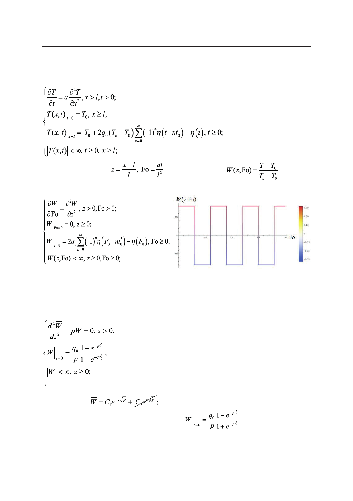

И.А. Джемесюк, С.Г. Горбунов
Соответствующий график приведен на рис. 11.
Чтобы найти закон распределения температуры по толщине пластины, для начала
рассмотрим математическую постановку следующей задачи:
Используя замену
эту задачу в безразмерном виде:
(критерий Фурье),
, получим
Рис. 11. График зависимости безразмерной температурной
функции на границе от критерия Фурье (температура на границе
изменяется мгновенно и многократно).
Воспользуемся интегральным преобразованием Лапласа [1] и формулой (7). Преоб-
разованная безразмерная задача в пространстве изображений имеет вид задачи Коши:
Решаем однородное дифференциальное уравнение второго порядка. Его общее реше-
ние имеет вид:
из условия ограниченности константу мы берем
равной нулю.
Найдём С1, исходя из граничного условия:
.
Подставив С1, С2 в выражение для общего решения однородного уравнения, получим
решение тепловой задачи в пространстве изображений:
Российский технологический журнал 2017 Том 5 № 5
47